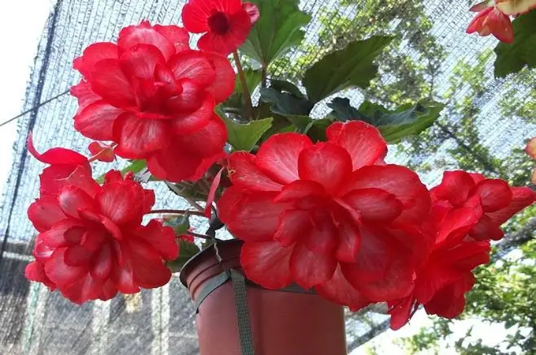

球根海棠的种植方法是什么？
回答时间： 2023-01-30
最佳答案

各位盆友大家好，今天我们一起来看一种花色鲜艳，花型繁多，适宜在家庭阳台庭院种植的植物—球根海棠的种植方法。
球根海棠也被称作茶花海棠，这是因为它的重瓣品种花型与茶花类似，实际上球根海棠花瓣分为单瓣，半重瓣和重瓣品种，花瓣边缘又有平滑和锯齿之分，花色有纯白，纯黄，浅粉，红色以及渐层和斑点等。球根海棠是一种秋海棠科秋海棠属的多年生常绿草本植物，原产在南美洲秘鲁巴西等国，现在作为一种园艺花卉被广泛种植。
球根海棠对温度有一定要求，冬季温度低于10度以后生长停止，温度持续低于10度时候叶片被冻伤，严重可导致植株死亡。夏季温度高于30度时候要注意降温，同时要增强环境通风，避免茎叶枯萎花芽脱落，温度高于35度时候地下块根易受腐烂死亡。
本站文章均来自互联网，仅供学习参考，如有侵犯您的版权，请邮箱联系我们删除！
 上一篇
上一篇